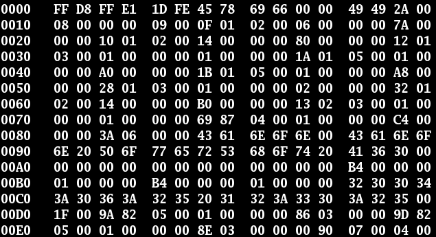

| Introdução | Sistema Decimal | Sistema Binário | Sistema Octal |
|---|
É uma das bases mais conhecidas (sendo a alternativa do sistema númerico binário), pois ela é usada na área de computação gráfica e informática no geral, com o intuito de compactar códigos extensos e, através disso, simbolizar uma gama alta de cores (Sistema RGB) como um exemplo de seu uso. Ela possui 16 algarismos distintos: 0, 1, 2, 3, 4, 5, 6, 7, 8, 9, A, B, C, D, E, F
Sequência de bytes em hexadecimal de um arquivo binário. Imagem tirada do site Wikipedia©
É necessário fazer a divisão do número no sistema decimal por 16 e guardar o resultado da divisão (trocando os restos 10, 11, 12, 13, 14 e 15, por A, B, C, D, E e F). Em seguinte, repita a
divisão do resultado da primeira divisão por 16 até não houver mais restos. Assim, os restos das divisões efetuadas de
trás para frente será o valor decimal em hexadecimal.
Exemplo:ㅤ127 / 16 = 7, resto F;
ㅤㅤㅤㅤㅤ(127)10 = (7F)16
ㅤㅤㅤㅤㅤ1440 / 16 = 90, resto 0;
ㅤㅤㅤㅤㅤ90 / 16 = 5, resto A;
ㅤㅤㅤㅤㅤ(1440)10 = (7F)16
Cada dígito da base hexadecimal deve ser multiplicado pelas potências de base 16.
Após, deve somar os resultados e assim, terá o valor no sistema decimal.
Exemplo:ㅤ(2B1)16 = 2 x 162 + 11 x 161 + 1 x 160;
ㅤㅤㅤㅤㅤ(2B1)16
= 512 + 176 + 1;
ㅤㅤㅤㅤㅤ(2B1)16 = (689)10
| Tabela de Equivalência | ||||||||||||||||
|---|---|---|---|---|---|---|---|---|---|---|---|---|---|---|---|---|
| Binário | 0000 | 0001 | 0010 | 0011 | 0100 | 0101 | 0110 | 0111 | 1000 | 1001 | 1010 | 1011 | 1100 | 1101 | 1110 | 1111 |
| ↓ | ↓ | ↓ | ↓ | ↓ | ↓ | ↓ | ↓ | ↓ | ↓ | ↓ | ↓ | ↓ | ↓ | ↓ | ↓ | ↓ |
| Hexadecimal | 0 | 1 | 2 | 3 | 4 | 5 | 6 | 7 | 8 | 9 | A | B | C | D | E | F |
Exemplos: (10101101)2 = (1010)2 (1101)2
ㅤㅤㅤㅤㅤㅤㅤㅤㅤㅤㅤ↓ ㅤㅤㅤㅤ↓
ㅤㅤㅤㅤㅤㅤㅤㅤㅤㅤㅤAㅤㅤㅤㅤD
ㅤ=ㅤ(AD)16
ㅤㅤㅤㅤㅤ(101011)2 = (0010)2 (1011)2
ㅤㅤㅤㅤㅤㅤㅤㅤㅤㅤㅤ↓ ㅤㅤㅤㅤ↓
ㅤㅤㅤㅤㅤㅤㅤㅤㅤㅤㅤ3ㅤㅤㅤㅤB
ㅤ=ㅤ(2B)16
ㅤㅤㅤㅤㅤ(10011)2 = (0001)1 (0011)2
ㅤㅤㅤㅤㅤㅤㅤㅤㅤㅤㅤ↓ ㅤㅤㅤㅤ↓
ㅤㅤㅤㅤㅤㅤㅤㅤㅤㅤㅤ1ㅤㅤㅤㅤ3
ㅤ=ㅤ(13)16
| Binário | Octal | Decimal | Hexadecimal |
|---|---|---|---|
| Base 2 | Base 8 | Base 10 | Base 16 |
| 0 | 0 | 0 | 0 |
| 1 | 1 | 1 | 1 |
| 10 | 2 | 2 | 2 |
| 11 | 3 | 3 | 3 |
| 100 | 4 | 4 | 4 |
| 101 | 5 | 5 | 5 |
| 110 | 6 | 6 | 6 |
| 111 | 7 | 7 | 7 |
| 1000 | 10 | 8 | 8 |
| 1001 | 11 | 9 | 9 |
| 1010 | 12 | 10 | A |
| 1011 | 13 | 11 | B |
| 1100 | 14 | 12 | C |
| 1101 | 15 | 13 | D |
| 1110 | 16 | 14 | E |
| 1111 | 17 | 15 | F |
Feito pelo estudante
Nicolas Eisfeld Ferreira©
Instituto Federal de Educação,Ciência e Tecnologia do Rio Grande do Sul - Campus Erechim